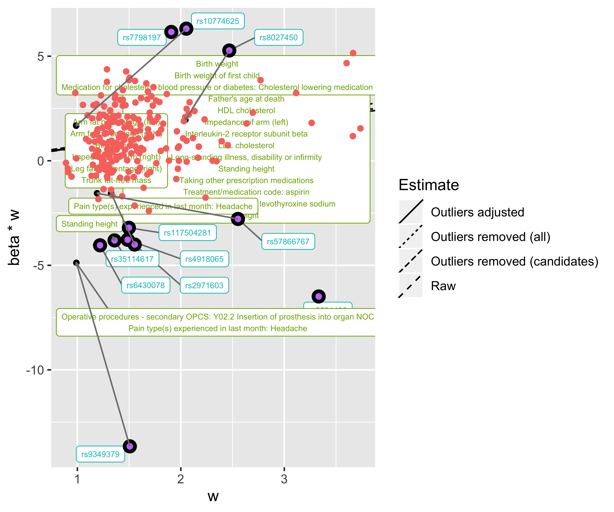

Guide to using MR-TRYX
Yoonsu Cho
guide.RmdThe following analyses should run within a couple of minutes, depending on internet speed and the traffic that the IEU GWAS database servers are experiencing.
Begin by choosing an exposure-outcome hypothesis to explore. e.g. LDL cholesterol on coronary heart disease. These data can be extracted from the IEU GWAS database using the TwoSampleMR package:
Data setup
If necessary install TwoSampleMR:
Create a dataset for SBP and CHD
library(TwoSampleMR)
a <- extract_instruments("ukb-b-20175")
#> API: public: http://gwas-api.mrcieu.ac.uk/
#> Warning in .fun(piece, ...): Duplicated SNPs present in exposure data for phenotype 'Systolic blood pressure, automated reading || id:ukb-b-20175. Just keeping the first instance:
#> rs17811915
b <- extract_outcome_data(a$SNP, "ieu-a-7", access_token=NULL)
#> Extracting data for 244 SNP(s) from 1 GWAS(s)
#> Finding proxies for 4 SNPs in outcome ieu-a-7
#> Extracting data for 4 SNP(s) from 1 GWAS(s)
dat <- harmonise_data(a,b)
#> Harmonising Systolic blood pressure, automated reading || id:ukb-b-20175 (ukb-b-20175) and Coronary heart disease || id:ieu-a-7 (ieu-a-7)
#> Removing the following SNPs for incompatible alleles:
#> rs17811915
#> Removing the following SNPs for being palindromic with intermediate allele frequencies:
#> rs11592442, rs12779675, rs1290790, rs2246832, rs28470858, rs28667801Running Tryx
We can now perform the analysis:
This will do the following:
- Initialise the Tryx class with the
datobject we already created - Find outlier SNPs in the exposure-outcome analysis
- Find traits in the IEU GWAS database that those outliers associate with. These traits are known as ‘candidate traits’
- Extract instruments for those ‘candidate traits’
- Perform MR of each of those ‘candidate traits’ against the exposure and the outcome
library(tryx)
x <- Tryx$new(dat)
x$mrtryx()
#> Using RadialMR package to detect outliers
#>
#> Radial IVW
#>
#> Estimate Std.Error t value Pr(>|t|)
#> Effect (Mod.2nd) 0.5991043 0.07718481 7.761945 8.363657e-15
#> Iterative 0.5991043 0.07718481 7.761945 8.363657e-15
#> Exact (FE) 0.6420699 0.04024276 15.954916 2.633294e-57
#> Exact (RE) 0.6101965 0.08872062 6.877730 5.590550e-11
#>
#>
#> Residual standard error: 1.92 on 232 degrees of freedom
#>
#> F-statistic: 60.25 on 1 and 232 DF, p-value: 2.66e-13
#> Q-Statistic for heterogeneity: 855.6769 on 232 DF , p-value: 2.874833e-72
#>
#> Outliers detected
#> Number of iterations = 2
#> Warning in if (radial$outliers[1] == "No significant outliers") {: the condition
#> has length > 1 and only the first element will be used
#> Identified 11 outliers
#> Using default list of 6467 traits
#> Extracting data for 11 SNP(s) from 6467 GWAS(s)
#> Found 139 candidate traits associated with outliers at p < 5e-08
#> Finding instruments for candidate traits
#> Warning in .fun(piece, ...): Duplicated SNPs present in exposure data for phenotype '3mm strong meridian (left) || id:ukb-b-14664. Just keeping the first instance:
#> rs8047844
#> Warning in .fun(piece, ...): Duplicated SNPs present in exposure data for phenotype '3mm strong meridian (right) || id:ukb-b-6852. Just keeping the first instance:
#> rs2242398
#> rs8047844
#> Warning in .fun(piece, ...): Duplicated SNPs present in exposure data for phenotype '3mm weak meridian (left) || id:ukb-b-11113. Just keeping the first instance:
#> rs8047844
#> Warning in .fun(piece, ...): Duplicated SNPs present in exposure data for phenotype '3mm weak meridian (right) || id:ukb-b-13506. Just keeping the first instance:
#> rs8047844
#> Warning in .fun(piece, ...): Duplicated SNPs present in exposure data for phenotype '6mm strong meridian (right) || id:ukb-b-11452. Just keeping the first instance:
#> rs8047844
#> Warning in .fun(piece, ...): Duplicated SNPs present in exposure data for phenotype '6mm weak meridian (left) || id:ukb-b-13538. Just keeping the first instance:
#> rs8047844
#> Warning in .fun(piece, ...): Duplicated SNPs present in exposure data for phenotype '6mm weak meridian (right) || id:ukb-b-13416. Just keeping the first instance:
#> rs8047844
#> Warning in .fun(piece, ...): Duplicated SNPs present in exposure data for phenotype 'Alcohol intake frequency. || id:ukb-b-5779. Just keeping the first instance:
#> rs9958320
#> Warning in .fun(piece, ...): Duplicated SNPs present in exposure data for phenotype 'Ankle spacing width || id:ukb-b-4080. Just keeping the first instance:
#> rs3732360
#> rs1294438
#> Warning in .fun(piece, ...): Duplicated SNPs present in exposure data for phenotype 'Arm fat percentage (left) || id:ukb-b-20188. Just keeping the first instance:
#> rs2731238
#> Warning in .fun(piece, ...): Duplicated SNPs present in exposure data for phenotype 'Arm fat-free mass (right) || id:ukb-b-19520. Just keeping the first instance:
#> rs3740591
#> Warning in .fun(piece, ...): Duplicated SNPs present in exposure data for phenotype 'Basal metabolic rate || id:ukb-b-16446. Just keeping the first instance:
#> rs3129962
#> rs3740591
#> Warning in .fun(piece, ...): Duplicated SNPs present in exposure data for phenotype 'Birth weight || id:ukb-b-13378. Just keeping the first instance:
#> rs2140240
#> Warning in .fun(piece, ...): Duplicated SNPs present in exposure data for phenotype 'Blood clot, DVT, bronchitis, emphysema, asthma, rhinitis, eczema, allergy diagnosed by doctor: Asthma || id:ukb-b-20296. Just keeping the first instance:
#> rs35320232
#> Warning in .fun(piece, ...): Duplicated SNPs present in exposure data for phenotype 'Blood clot, DVT, bronchitis, emphysema, asthma, rhinitis, eczema, allergy diagnosed by doctor: Hayfever, allergic rhinitis or eczema || id:ukb-b-17241. Just keeping the first instance:
#> rs35320232
#> rs2075973
#> Warning in .fun(piece, ...): Duplicated SNPs present in exposure data for phenotype 'Blood clot, DVT, bronchitis, emphysema, asthma, rhinitis, eczema, allergy diagnosed by doctor: None of the above || id:ukb-b-18200. Just keeping the first instance:
#> rs35320232
#> rs2097431
#> Warning in .fun(piece, ...): Duplicated SNPs present in exposure data for phenotype 'Body fat percentage || id:ukb-b-8909. Just keeping the first instance:
#> rs2731238
#> Warning in .fun(piece, ...): Duplicated SNPs present in exposure data for phenotype 'Diastolic blood pressure, automated reading || id:ukb-b-7992. Just keeping the first instance:
#> rs28752924
#> rs17304212
#> Warning in .fun(piece, ...): Duplicated SNPs present in exposure data for phenotype 'Duration to first press of snap-button in each round || id:ukb-b-19373. Just keeping the first instance:
#> rs9304167
#> Warning in .fun(piece, ...): Duplicated SNPs present in exposure data for phenotype 'Hip circumference || id:ukb-b-15590. Just keeping the first instance:
#> rs1294438
#> Warning in .fun(piece, ...): Duplicated SNPs present in exposure data for phenotype 'Impedance of arm (right) || id:ukb-b-7859. Just keeping the first instance:
#> rs111650620
#> rs1382568
#> Warning in .fun(piece, ...): Duplicated SNPs present in exposure data for phenotype 'Impedance of leg (left) || id:ukb-b-14068. Just keeping the first instance:
#> rs776912
#> rs2952894
#> Warning in .fun(piece, ...): Duplicated SNPs present in exposure data for phenotype 'Impedance of leg (right) || id:ukb-b-7376. Just keeping the first instance:
#> rs776912
#> Warning in .fun(piece, ...): Duplicated SNPs present in exposure data for phenotype 'Leg fat percentage (left) || id:ukb-b-18377. Just keeping the first instance:
#> rs1428
#> Warning in .fun(piece, ...): Duplicated SNPs present in exposure data for phenotype 'Leg fat percentage (right) || id:ukb-b-20531. Just keeping the first instance:
#> rs7027096
#> rs2731238
#> Warning in .fun(piece, ...): Duplicated SNPs present in exposure data for phenotype 'Leg fat-free mass (left) || id:ukb-b-16099. Just keeping the first instance:
#> rs3129962
#> rs77760034
#> Warning in .fun(piece, ...): Duplicated SNPs present in exposure data for phenotype 'Leg fat-free mass (right) || id:ukb-b-12828. Just keeping the first instance:
#> rs77760034
#> Warning in .fun(piece, ...): Duplicated SNPs present in exposure data for phenotype 'Leg predicted mass (left) || id:ukb-b-17271. Just keeping the first instance:
#> rs3129962
#> rs77760034
#> Warning in .fun(piece, ...): Duplicated SNPs present in exposure data for phenotype 'Leg predicted mass (right) || id:ukb-b-14310. Just keeping the first instance:
#> rs77760034
#> Warning in .fun(piece, ...): Duplicated SNPs present in exposure data for phenotype 'Medication for cholesterol, blood pressure or diabetes: None of the above || id:ukb-b-12014. Just keeping the first instance:
#> rs2209042
#> Warning in .fun(piece, ...): Duplicated SNPs present in exposure data for phenotype 'Medication for cholesterol, blood pressure, diabetes, or take exogenous hormones: None of the above || id:ukb-b-20379. Just keeping the first instance:
#> rs13204736
#> Warning in .fun(piece, ...): Duplicated SNPs present in exposure data for phenotype 'Medication for pain relief, constipation, heartburn: Paracetamol || id:ukb-b-17595. Just keeping the first instance:
#> rs34555420
#> Warning in .fun(piece, ...): Duplicated SNPs present in exposure data for phenotype 'Non-cancer illness code, self-reported: asthma || id:ukb-b-18113. Just keeping the first instance:
#> rs17142799
#> rs35320232
#> Warning in .fun(piece, ...): Duplicated SNPs present in exposure data for phenotype 'Non-cancer illness code, self-reported: hypertension || id:ukb-b-14057. Just keeping the first instance:
#> rs4783581
#> Warning in .fun(piece, ...): Duplicated SNPs present in exposure data for phenotype 'Number of self-reported non-cancer illnesses || id:ukb-b-4063. Just keeping the first instance:
#> rs13204736
#> Warning in .fun(piece, ...): Duplicated SNPs present in exposure data for phenotype 'Pain type(s) experienced in last month: Headache || id:ukb-b-12181. Just keeping the first instance:
#> rs34555420
#> Warning in .fun(piece, ...): Duplicated SNPs present in exposure data for phenotype 'Peak expiratory flow (PEF) || id:ukb-b-12019. Just keeping the first instance:
#> rs2666547
#> Warning in .fun(piece, ...): Duplicated SNPs present in exposure data for phenotype 'Sitting height || id:ukb-b-16881. Just keeping the first instance:
#> rs4651157
#> rs872937
#> Warning in .fun(piece, ...): Duplicated SNPs present in exposure data for phenotype 'Standing height || id:ukb-b-10787. Just keeping the first instance:
#> rs11252860
#> rs34773647
#> rs664317
#> rs7978217
#> rs11051456
#> rs1019075
#> Warning in .fun(piece, ...): Duplicated SNPs present in exposure data for phenotype 'Treatment/medication code: amlodipine || id:ukb-b-9207. Just keeping the first instance:
#> rs2077111
#> Warning in .fun(piece, ...): Duplicated SNPs present in exposure data for phenotype 'Trunk fat mass || id:ukb-b-20044. Just keeping the first instance:
#> rs2731238
#> Warning in .fun(piece, ...): Duplicated SNPs present in exposure data for phenotype 'Trunk fat percentage || id:ukb-b-16407. Just keeping the first instance:
#> rs2731238
#> Warning in .fun(piece, ...): Duplicated SNPs present in exposure data for phenotype 'Trunk fat-free mass || id:ukb-b-17409. Just keeping the first instance:
#> rs3735352
#> rs3740591
#> rs1040457
#> Warning in .fun(piece, ...): Duplicated SNPs present in exposure data for phenotype 'Trunk predicted mass || id:ukb-b-9685. Just keeping the first instance:
#> rs77760034
#> rs3735352
#> rs7978217
#> rs1040457
#> rs3740591
#> Warning in .fun(piece, ...): Duplicated SNPs present in exposure data for phenotype 'Vascular/heart problems diagnosed by doctor: High blood pressure || id:ukb-b-14177. Just keeping the first instance:
#> rs4783581
#> Warning in .fun(piece, ...): Duplicated SNPs present in exposure data for phenotype 'Vascular/heart problems diagnosed by doctor: None of the above || id:ukb-b-13352. Just keeping the first instance:
#> rs4783581
#> Warning in .fun(piece, ...): Duplicated SNPs present in exposure data for phenotype 'Whole body fat-free mass || id:ukb-b-13354. Just keeping the first instance:
#> rs434072
#> rs3740591
#> rs1040457
#> rs77760034
#> Warning in .fun(piece, ...): Duplicated SNPs present in exposure data for phenotype 'Whole body water mass || id:ukb-b-14540. Just keeping the first instance:
#> rs1040457
#> rs3740591
#> rs77760034
#> Warning in format_data(d, type = "exposure", snps = NULL, phenotype_col =
#> "phenotype", : eaf column is not numeric. Coercing...
#> Removing outlier SNPs from candidate trait instrument lists
#> 139 traits with at least one instrument
#> Looking up candidate trait instruments for Coronary heart disease || id:ieu-a-7
#> Extracting data for 10546 SNP(s) from 1 GWAS(s)
#> 1 of 1 outcomes
#> [>] 1 of 2 chunks
#> [>] 2 of 2 chunks
#> 10339 instruments extracted for Coronary heart disease || id:ieu-a-7
#> Looking up candidate trait instruments for Systolic blood pressure, automated reading || id:ukb-b-20175
#> Extracting data for 10546 SNP(s) from 1 GWAS(s)
#> 1 of 1 outcomes
#> [>] 1 of 2 chunks
#> [>] 2 of 2 chunks
#> instruments extracted for Systolic blood pressure, automated reading || id:ukb-b-20175
#> Looking up exposure instruments for 139 candidate traits
#> Extracting data for 233 SNP(s) from 139 GWAS(s)
#> 30833 instruments extracted
#> Removing outlier SNPs from candidate trait outcome lists
#> Removed 212 outlier SNPs
#> Performing MR of 139 candidate traits against Coronary heart disease || id:ieu-a-7
#> Performing MR of 139 candidate traits against Systolic blood pressure, automated reading || id:ukb-b-20175
#> Performing MR of Systolic blood pressure, automated reading || id:ukb-b-20175 against 139 candidate traitsStep-by-step analysis
The analysis performed by mrtryx() can be broken down into multiple steps, running the following commands:
# Find outlier SNPs in the exposure-outcome analysis
x$get_outliers()
# Find traits in the MR-Base database that those outliers associate with. These traits are known as 'candidate traits'
x$set_candidate_traits()
x$scan()Note that you can browse available traits here: https://gwas.mrcieu.ac.uk/ and get a complete list using:
# Extract instruments for those 'candidate traits'
x$extractions() #which includes the following functions:
x$candidate_instruments()
x$outcome_instruments()
x$exposure_instruments()
x$exposure_candidate_instruments()
# Make datasets for MR analysis
x$harmonise() #which includes the following functions:
x$candidate_outcome_dat()
x$candidate_exposure_dat()
x$exposure_candidate_dat()
# Perform MR of each of those 'candidate traits' against the exposure and the outcomes
x$mr()See the ?Tryx for options on the parameters for this analysis. e.g. You can specify your own set of outliers, for example SNPs that have extreme p-values in the outcome GWAS
The next steps are to determine which of the candidate traits are of interest (e.g. using p-value thresholds), visualise the results, and adjust the exposure-outcome estimates based on knowledge of the ‘candidate trait’ associations.
Significant candidate traits
One can determine which of the putative associations might be ‘interesting’ in different ways. We have provided a simple convenience function to apply different multiple testing corrections. e.g.
x$tryx.sig()
#> Adjusting p-value
#> * * * *
#> Number of candidate - outcome associations: 78
#> * * * *
#> Large vessel disease || id:ieu-a-1110
#> HDL cholesterol || id:ieu-a-299
#> LDL cholesterol || id:ieu-a-300
#> Total cholesterol || id:ieu-a-301
#> Myocardial infarction || id:ieu-a-798
#> Interleukin-2 receptor subunit beta || id:prot-a-1519
#> Glutaminyl-peptide cyclotransferase-like protein || id:prot-a-2466
#> Illnesses of mother: None of the above (group 1) || id:ukb-b-10454
#> Age high blood pressure diagnosed || id:ukb-b-1061
#> Standing height || id:ukb-b-10787
#> Diagnoses - secondary ICD10: Z95.1 Presence of aortocoronary bypass graft || id:ukb-b-11064
#> Father's age at death || id:ukb-b-11303
#> Vascular/heart problems diagnosed by doctor: Heart attack || id:ukb-b-11590
#> Treatment/medication code: atenolol || id:ukb-b-11632
#> Medication for cholesterol, blood pressure or diabetes: Cholesterol lowering medication || id:ukb-b-11740
#> Weight || id:ukb-b-11842
#> Treatment/medication code: ramipril || id:ukb-b-11895
#> Medication for cholesterol, blood pressure or diabetes: None of the above || id:ukb-b-12014
#> Pain type(s) experienced in last month: Headache || id:ukb-b-12181
#> Operation code: coronary artery bypass grafts (cabg) || id:ukb-b-12465
#> Illnesses of mother: Heart disease || id:ukb-b-12477
#> Diagnoses - secondary ICD10: I10 Essential (primary) hypertension || id:ukb-b-12493
#> Treatment speciality of consultant (recoded): General medicine || id:ukb-b-12646
#> Arm fat percentage (right) || id:ukb-b-12854
#> Vascular/heart problems diagnosed by doctor: None of the above || id:ukb-b-13352
#> Birth weight || id:ukb-b-13378
#> 3mm weak meridian (right) || id:ukb-b-13506
#> Long-standing illness, disability or infirmity || id:ukb-b-13764
#> Non-cancer illness code, self-reported: hypertension || id:ukb-b-14057
#> Vascular/heart problems diagnosed by doctor: High blood pressure || id:ukb-b-14177
#> Illnesses of siblings: Heart disease || id:ukb-b-14371
#> Medication for cholesterol, blood pressure or diabetes: Blood pressure medication || id:ukb-b-14395
#> Illnesses of father: None of the above (group 1) || id:ukb-b-15169
#> Operative procedures - main OPCS: K45.3 Anastomosis of mammary artery to left anterior descending coronary artery || id:ukb-b-15491
#> Hip circumference || id:ukb-b-15590
#> Diagnoses - secondary ICD10: I20.9 Angina pectoris, unspecified || id:ukb-b-15686
#> Diagnoses - secondary ICD10: Z95.5 Presence of coronary angioplasty implant and graft || id:ukb-b-15748
#> Non-cancer illness code, self-reported: heart attack/myocardial infarction || id:ukb-b-15829
#> Main speciality of consultant (recoded): Cardiology || id:ukb-b-16376
#> Trunk fat percentage || id:ukb-b-16407
#> Diagnoses - secondary ICD10: I25.8 Other forms of chronic ischaemic heart disease || id:ukb-b-16606
#> Diagnoses - main ICD10: I25.1 Atherosclerotic heart disease || id:ukb-b-1668
#> Treatment/medication code: ibuprofen || id:ukb-b-16866
#> Sitting height || id:ukb-b-16881
#> Illnesses of siblings: None of the above (group 1) || id:ukb-b-17360
#> Trunk fat-free mass || id:ukb-b-17409
#> Operative procedures - secondary OPCS: Y02.2 Insertion of prosthesis into organ NOC || id:ukb-b-1744
#> Treatment/medication code: levothyroxine sodium || id:ukb-b-17918
#> Medication for cholesterol, blood pressure, diabetes, or take exogenous hormones: Blood pressure medication || id:ukb-b-18009
#> Operative procedures - main OPCS: K49.1 Percutaneous transluminal balloon angioplasty of one coronary artery || id:ukb-b-18018
#> Illnesses of mother: High blood pressure || id:ukb-b-18167
#> Leg fat percentage (left) || id:ukb-b-18377
#> Illnesses of father: Heart disease || id:ukb-b-18408
#> Treatment/medication code: bendroflumethiazide || id:ukb-b-18799
#> Impedance of arm (left) || id:ukb-b-19379
#> Non-cancer illness code, self-reported: hypothyroidism/myxoedema || id:ukb-b-19732
#> Impedance of whole body || id:ukb-b-19921
#> Trunk fat mass || id:ukb-b-20044
#> Arm fat percentage (left) || id:ukb-b-20188
#> Taking other prescription medications || id:ukb-b-20292
#> Treatment speciality of consultant (recoded): Cardiology || id:ukb-b-20300
#> Medication for cholesterol, blood pressure, diabetes, or take exogenous hormones: None of the above || id:ukb-b-20379
#> Leg fat percentage (right) || id:ukb-b-20531
#> Birth weight of first child || id:ukb-b-3357
#> Number of treatments/medications taken || id:ukb-b-3656
#> Number of self-reported non-cancer illnesses || id:ukb-b-4063
#> Diagnoses - secondary ICD10: E03.9 Hypothyroidism, unspecified || id:ukb-b-4226
#> Medication for pain relief, constipation, heartburn: Aspirin || id:ukb-b-7137
#> Diagnoses - secondary ICD10: I25.1 Atherosclerotic heart disease || id:ukb-b-7436
#> Impedance of arm (right) || id:ukb-b-7859
#> Operation code: coronary angioplasty (ptca) +/- stent || id:ukb-b-7869
#> Diastolic blood pressure, automated reading || id:ukb-b-7992
#> Vascular/heart problems diagnosed by doctor: Angina || id:ukb-b-8468
#> Non-cancer illness code, self-reported: angina || id:ukb-b-8650
#> Illnesses of siblings: High blood pressure || id:ukb-b-8746
#> Treatment/medication code: aspirin || id:ukb-b-8755
#> Body fat percentage || id:ukb-b-8909
#> Treatment/medication code: amlodipine || id:ukb-b-9207
#>
#> * * * *
#> Number of candidate - exposure associations: 68
#> * * * *
#> Large vessel disease || id:ieu-a-1110
#> Interleukin-2 receptor subunit beta || id:prot-a-1519
#> Glutaminyl-peptide cyclotransferase-like protein || id:prot-a-2466
#> Illnesses of mother: None of the above (group 1) || id:ukb-b-10454
#> Age high blood pressure diagnosed || id:ukb-b-1061
#> Standing height || id:ukb-b-10787
#> Treatment/medication code: atenolol || id:ukb-b-11632
#> Medication for cholesterol, blood pressure or diabetes: Cholesterol lowering medication || id:ukb-b-11740
#> Treatment/medication code: ramipril || id:ukb-b-11895
#> Pulse wave Arterial Stiffness index || id:ukb-b-11971
#> Medication for cholesterol, blood pressure or diabetes: None of the above || id:ukb-b-12014
#> Peak expiratory flow (PEF) || id:ukb-b-12019
#> Pain type(s) experienced in last month: Headache || id:ukb-b-12181
#> Diagnoses - secondary ICD10: I10 Essential (primary) hypertension || id:ukb-b-12493
#> Leg fat-free mass (right) || id:ukb-b-12828
#> Arm fat percentage (right) || id:ukb-b-12854
#> Vascular/heart problems diagnosed by doctor: None of the above || id:ukb-b-13352
#> Whole body fat-free mass || id:ukb-b-13354
#> Birth weight || id:ukb-b-13378
#> 6mm weak meridian (right) || id:ukb-b-13416
#> 3mm weak meridian (right) || id:ukb-b-13506
#> Long-standing illness, disability or infirmity || id:ukb-b-13764
#> Non-cancer illness code, self-reported: hypertension || id:ukb-b-14057
#> Vascular/heart problems diagnosed by doctor: High blood pressure || id:ukb-b-14177
#> Leg predicted mass (right) || id:ukb-b-14310
#> Medication for cholesterol, blood pressure or diabetes: Blood pressure medication || id:ukb-b-14395
#> Whole body water mass || id:ukb-b-14540
#> 3mm strong meridian (left) || id:ukb-b-14664
#> Leg fat-free mass (left) || id:ukb-b-16099
#> Trunk fat percentage || id:ukb-b-16407
#> Basal metabolic rate || id:ukb-b-16446
#> Arm predicted mass (right) || id:ukb-b-16698
#> Treatment/medication code: ibuprofen || id:ukb-b-16866
#> Sitting height || id:ukb-b-16881
#> Leg predicted mass (left) || id:ukb-b-17271
#> Illnesses of siblings: None of the above (group 1) || id:ukb-b-17360
#> Trunk fat-free mass || id:ukb-b-17409
#> Medication for cholesterol, blood pressure, diabetes, or take exogenous hormones: Blood pressure medication || id:ukb-b-18009
#> Non-cancer illness code, self-reported: asthma || id:ukb-b-18113
#> Illnesses of mother: High blood pressure || id:ukb-b-18167
#> Leg fat percentage (left) || id:ukb-b-18377
#> Treatment/medication code: bendroflumethiazide || id:ukb-b-18799
#> Impedance of arm (left) || id:ukb-b-19379
#> Illnesses of father: High blood pressure || id:ukb-b-19456
#> Impedance of whole body || id:ukb-b-19921
#> Arm fat-free mass (left) || id:ukb-b-19925
#> Trunk fat mass || id:ukb-b-20044
#> Arm fat percentage (left) || id:ukb-b-20188
#> Ever smoked || id:ukb-b-20261
#> Medication for cholesterol, blood pressure, diabetes, or take exogenous hormones: None of the above || id:ukb-b-20379
#> Leg fat percentage (right) || id:ukb-b-20531
#> Birth weight of first child || id:ukb-b-3357
#> Number of treatments/medications taken || id:ukb-b-3656
#> Operation code: hysterectomy || id:ukb-b-3700
#> Number of self-reported non-cancer illnesses || id:ukb-b-4063
#> Lifetime number of sexual partners || id:ukb-b-4256
#> 6mm strong meridian (left) || id:ukb-b-645
#> Impedance of arm (right) || id:ukb-b-7859
#> Diastolic blood pressure, automated reading || id:ukb-b-7992
#> Vascular/heart problems diagnosed by doctor: Angina || id:ukb-b-8468
#> Non-cancer illness code, self-reported: angina || id:ukb-b-8650
#> Illnesses of siblings: High blood pressure || id:ukb-b-8746
#> Treatment/medication code: aspirin || id:ukb-b-8755
#> Pulse wave peak to peak time || id:ukb-b-8778
#> Body fat percentage || id:ukb-b-8909
#> Arm predicted mass (left) || id:ukb-b-9093
#> Treatment/medication code: amlodipine || id:ukb-b-9207
#> Trunk predicted mass || id:ukb-b-9685
#>
#> * * * *
#> Number of exposure - candidate associations: 89
#> * * * *
#> Large vessel disease || id:ieu-a-1110
#> Interleukin-2 receptor subunit beta || id:prot-a-1519
#> Glutaminyl-peptide cyclotransferase-like protein || id:prot-a-2466
#> Illnesses of mother: None of the above (group 1) || id:ukb-b-10454
#> Age high blood pressure diagnosed || id:ukb-b-1061
#> Standing height || id:ukb-b-10787
#> Treatment/medication code: atenolol || id:ukb-b-11632
#> Medication for cholesterol, blood pressure or diabetes: Cholesterol lowering medication || id:ukb-b-11740
#> Treatment/medication code: ramipril || id:ukb-b-11895
#> Pulse wave Arterial Stiffness index || id:ukb-b-11971
#> Medication for cholesterol, blood pressure or diabetes: None of the above || id:ukb-b-12014
#> Peak expiratory flow (PEF) || id:ukb-b-12019
#> Pain type(s) experienced in last month: Headache || id:ukb-b-12181
#> Diagnoses - secondary ICD10: I10 Essential (primary) hypertension || id:ukb-b-12493
#> Leg fat-free mass (right) || id:ukb-b-12828
#> Arm fat percentage (right) || id:ukb-b-12854
#> Vascular/heart problems diagnosed by doctor: None of the above || id:ukb-b-13352
#> Whole body fat-free mass || id:ukb-b-13354
#> Birth weight || id:ukb-b-13378
#> 6mm weak meridian (right) || id:ukb-b-13416
#> 3mm weak meridian (right) || id:ukb-b-13506
#> Long-standing illness, disability or infirmity || id:ukb-b-13764
#> Non-cancer illness code, self-reported: hypertension || id:ukb-b-14057
#> Vascular/heart problems diagnosed by doctor: High blood pressure || id:ukb-b-14177
#> Leg predicted mass (right) || id:ukb-b-14310
#> Medication for cholesterol, blood pressure or diabetes: Blood pressure medication || id:ukb-b-14395
#> Whole body water mass || id:ukb-b-14540
#> 3mm strong meridian (left) || id:ukb-b-14664
#> Leg fat-free mass (left) || id:ukb-b-16099
#> Trunk fat percentage || id:ukb-b-16407
#> Basal metabolic rate || id:ukb-b-16446
#> Arm predicted mass (right) || id:ukb-b-16698
#> Treatment/medication code: ibuprofen || id:ukb-b-16866
#> Sitting height || id:ukb-b-16881
#> Leg predicted mass (left) || id:ukb-b-17271
#> Illnesses of siblings: None of the above (group 1) || id:ukb-b-17360
#> Trunk fat-free mass || id:ukb-b-17409
#> Medication for cholesterol, blood pressure, diabetes, or take exogenous hormones: Blood pressure medication || id:ukb-b-18009
#> Non-cancer illness code, self-reported: asthma || id:ukb-b-18113
#> Illnesses of mother: High blood pressure || id:ukb-b-18167
#> Leg fat percentage (left) || id:ukb-b-18377
#> Treatment/medication code: bendroflumethiazide || id:ukb-b-18799
#> Impedance of arm (left) || id:ukb-b-19379
#> Illnesses of father: High blood pressure || id:ukb-b-19456
#> Impedance of whole body || id:ukb-b-19921
#> Arm fat-free mass (left) || id:ukb-b-19925
#> Trunk fat mass || id:ukb-b-20044
#> Arm fat percentage (left) || id:ukb-b-20188
#> Ever smoked || id:ukb-b-20261
#> Medication for cholesterol, blood pressure, diabetes, or take exogenous hormones: None of the above || id:ukb-b-20379
#> Leg fat percentage (right) || id:ukb-b-20531
#> Birth weight of first child || id:ukb-b-3357
#> Number of treatments/medications taken || id:ukb-b-3656
#> Operation code: hysterectomy || id:ukb-b-3700
#> Number of self-reported non-cancer illnesses || id:ukb-b-4063
#> Lifetime number of sexual partners || id:ukb-b-4256
#> 6mm strong meridian (left) || id:ukb-b-645
#> Impedance of arm (right) || id:ukb-b-7859
#> Diastolic blood pressure, automated reading || id:ukb-b-7992
#> Vascular/heart problems diagnosed by doctor: Angina || id:ukb-b-8468
#> Non-cancer illness code, self-reported: angina || id:ukb-b-8650
#> Illnesses of siblings: High blood pressure || id:ukb-b-8746
#> Treatment/medication code: aspirin || id:ukb-b-8755
#> Pulse wave peak to peak time || id:ukb-b-8778
#> Body fat percentage || id:ukb-b-8909
#> Arm predicted mass (left) || id:ukb-b-9093
#> Treatment/medication code: amlodipine || id:ukb-b-9207
#> Trunk predicted mass || id:ukb-b-9685Will by default use FDR of 5%. See ?Tryx for more options.
Adjustment
Finally, to adjust the SNP effects on the exposure and outcome traits given their influences on the candidate traits, we can run:
x$analyse()
#> p->y: rs9349379 - Diagnoses - secondary ICD10: I20.9 Angina pectoris, unspecified || id:ukb-b-15686
#> x<-p->y: rs10774625 - Birth weight || id:ukb-b-13378
#> p->y: rs6430078 - Illnesses of father: Heart disease || id:ukb-b-18408
#> x<-p->y: rs10774625 - Long-standing illness, disability or infirmity || id:ukb-b-13764
#> x<-p->y: rs10774625 - Medication for cholesterol, blood pressure, diabetes, or take exogenous hormones: Blood pressure medication || id:ukb-b-18009
#> x<-p->y: rs2681492 - Medication for cholesterol, blood pressure, diabetes, or take exogenous hormones: Blood pressure medication || id:ukb-b-18009
#> x<-p->y: rs10774625 - Treatment/medication code: aspirin || id:ukb-b-8755
#> x<-p->y: rs10774625 - Treatment/medication code: atenolol || id:ukb-b-11632
#> x<-p->y: rs10774625 - Illnesses of siblings: High blood pressure || id:ukb-b-8746
#> p->y: rs9349379 - Illnesses of siblings: Heart disease || id:ukb-b-14371
#> x<-p->y: rs2681492 - Treatment/medication code: bendroflumethiazide || id:ukb-b-18799
#> x<-p->y: rs57866767 - Treatment/medication code: amlodipine || id:ukb-b-9207
#> p->y: rs9349379 - Operation code: coronary angioplasty (ptca) +/- stent || id:ukb-b-7869
#> p->y: rs10774625 - Treatment speciality of consultant (recoded): Cardiology || id:ukb-b-20300
#> x<-p->y: rs57866767 - Impedance of arm (left) || id:ukb-b-19379
#> x<-p->y: rs35114617 - Sitting height || id:ukb-b-16881
#> x<-p->y: rs8027450 - Non-cancer illness code, self-reported: hypertension || id:ukb-b-14057
#> p->y: rs9349379 - Illnesses of mother: Heart disease || id:ukb-b-12477
#> p->y: rs10774625 - Vascular/heart problems diagnosed by doctor: Heart attack || id:ukb-b-11590
#> x<-p->y: rs2681492 - Medication for cholesterol, blood pressure or diabetes: Blood pressure medication || id:ukb-b-14395
#> p->y: rs9349379 - Diagnoses - secondary ICD10: Z95.5 Presence of coronary angioplasty implant and graft || id:ukb-b-15748
#> x<-p->y: rs57866767 - 3mm weak meridian (right) || id:ukb-b-13506
#> p->y: rs10774625 - Hip circumference || id:ukb-b-15590
#> p->y: rs10774625 - Illnesses of father: None of the above (group 1) || id:ukb-b-15169
#> p->y: rs8027450 - Illnesses of father: None of the above (group 1) || id:ukb-b-15169
#> x<-p->y: rs57866767 - Impedance of whole body || id:ukb-b-19921
#> x<-p->y: rs57866767 - Arm fat percentage (left) || id:ukb-b-20188
#> x<-p->y: rs57866767 - Birth weight || id:ukb-b-13378
#> p->y: rs9349379 - Diagnoses - secondary ICD10: I25.1 Atherosclerotic heart disease || id:ukb-b-7436
#> x<-p->y: rs10774625 - Medication for cholesterol, blood pressure, diabetes, or take exogenous hormones: None of the above || id:ukb-b-20379
#> p->y: rs10774625 - Diagnoses - secondary ICD10: E03.9 Hypothyroidism, unspecified || id:ukb-b-4226
#> x<-p->y: rs10774625 - Standing height || id:ukb-b-10787
#> p->y: rs9349379 - Operative procedures - secondary OPCS: Y02.2 Insertion of prosthesis into organ NOC || id:ukb-b-1744
#> x<-p->y: rs57866767 - Leg fat percentage (left) || id:ukb-b-18377
#> x<-p->y: rs57866767 - Body fat percentage || id:ukb-b-8909
#> x<-p->y: rs10774625 - Age high blood pressure diagnosed || id:ukb-b-1061
#> x<-p->y: rs8027450 - Illnesses of mother: High blood pressure || id:ukb-b-18167
#> p->y: rs10774625 - Medication for pain relief, constipation, heartburn: Aspirin || id:ukb-b-7137
#> p->y: rs9349379 - Non-cancer illness code, self-reported: heart attack/myocardial infarction || id:ukb-b-15829
#> p->y: rs9349379 - Diagnoses - secondary ICD10: I25.8 Other forms of chronic ischaemic heart disease || id:ukb-b-16606
#> x<-p->y: rs10774625 - Illnesses of siblings: None of the above (group 1) || id:ukb-b-17360
#> x<-p->y: rs57866767 - Leg fat percentage (right) || id:ukb-b-20531
#> x<-p->y: rs57866767 - Non-cancer illness code, self-reported: hypertension || id:ukb-b-14057
#> x<-p->y: rs10774625 - Medication for cholesterol, blood pressure or diabetes: None of the above || id:ukb-b-12014
#> x<-p->y: rs2681492 - Medication for cholesterol, blood pressure or diabetes: None of the above || id:ukb-b-12014
#> x<-p->y: rs57866767 - Medication for cholesterol, blood pressure or diabetes: Blood pressure medication || id:ukb-b-14395
#> p->y: rs10774625 - Diagnoses - secondary ICD10: Z95.5 Presence of coronary angioplasty implant and graft || id:ukb-b-15748
#> p->y: rs10774625 - Weight || id:ukb-b-11842
#> x<-p->y: rs8027450 - Vascular/heart problems diagnosed by doctor: High blood pressure || id:ukb-b-14177
#> x<-p->y: rs57866767 - Diastolic blood pressure, automated reading || id:ukb-b-7992
#> x<-p->y: rs2681492 - Diastolic blood pressure, automated reading || id:ukb-b-7992
#> p->y: rs10774625 - Diagnoses - secondary ICD10: I25.1 Atherosclerotic heart disease || id:ukb-b-7436
#> p->y: rs9349379 - Diagnoses - secondary ICD10: Z95.1 Presence of aortocoronary bypass graft || id:ukb-b-11064
#> x<-p->y: rs35114617 - Standing height || id:ukb-b-10787
#> p->y: rs10774625 - Non-cancer illness code, self-reported: hypothyroidism/myxoedema || id:ukb-b-19732
#> p->y: rs10774625 - Treatment/medication code: levothyroxine sodium || id:ukb-b-17918
#> x<-p->y: rs10774625 - Treatment/medication code: ramipril || id:ukb-b-11895
#> p->y: rs8027450 - Illnesses of father: Heart disease || id:ukb-b-18408
#> x<-p->y: rs8027450 - Illnesses of siblings: High blood pressure || id:ukb-b-8746
#> x<-p->y: rs57866767 - Arm fat percentage (right) || id:ukb-b-12854
#> x<-p->y: rs10774625 - Trunk fat-free mass || id:ukb-b-17409
#> p->y: rs9349379 - Operative procedures - main OPCS: K45.3 Anastomosis of mammary artery to left anterior descending coronary artery || id:ukb-b-15491
#> x<-p->y: rs8027450 - Birth weight of first child || id:ukb-b-3357
#> p->y: rs9349379 - Main speciality of consultant (recoded): Cardiology || id:ukb-b-16376
#> x<-p->y: rs8027450 - Vascular/heart problems diagnosed by doctor: None of the above || id:ukb-b-13352
#> x<-p->y: rs2681492 - Vascular/heart problems diagnosed by doctor: None of the above || id:ukb-b-13352
#> x<-p->y: rs57866767 - Impedance of arm (right) || id:ukb-b-7859
#> x<-p->y: rs10774625 - 3mm weak meridian (right) || id:ukb-b-13506
#> x<-p->y: rs57866767 - Vascular/heart problems diagnosed by doctor: High blood pressure || id:ukb-b-14177
#> x<-p->y: rs10774625 - Impedance of whole body || id:ukb-b-19921
#> x<-p->y: rs6430078 - Diastolic blood pressure, automated reading || id:ukb-b-7992
#> x<-p->y: rs8027450 - Medication for cholesterol, blood pressure, diabetes, or take exogenous hormones: Blood pressure medication || id:ukb-b-18009
#> x<-p->y: rs57866767 - Medication for cholesterol, blood pressure, diabetes, or take exogenous hormones: Blood pressure medication || id:ukb-b-18009
#> x<-p->y: rs10774625 - Diagnoses - secondary ICD10: I10 Essential (primary) hypertension || id:ukb-b-12493
#> x<-p->y: rs8027450 - Diagnoses - secondary ICD10: I10 Essential (primary) hypertension || id:ukb-b-12493
#> x<-p->y: rs57866767 - Diagnoses - secondary ICD10: I10 Essential (primary) hypertension || id:ukb-b-12493
#> p->y: rs10774625 - Treatment speciality of consultant (recoded): General medicine || id:ukb-b-12646
#> x<-p->y: rs8027450 - Treatment/medication code: atenolol || id:ukb-b-11632
#> x<-p->y: rs10774625 - Number of treatments/medications taken || id:ukb-b-3656
#> x<-p->y: rs9349379 - Treatment/medication code: ibuprofen || id:ukb-b-16866
#> x<-p->y: rs57866767 - Trunk fat-free mass || id:ukb-b-17409
#> x<-p->y: rs10774625 - Birth weight of first child || id:ukb-b-3357
#> x<-p->y: rs10774625 - Vascular/heart problems diagnosed by doctor: None of the above || id:ukb-b-13352
#> x<-p->y: rs57866767 - Vascular/heart problems diagnosed by doctor: None of the above || id:ukb-b-13352
#> x<-p->y: rs2681492 - Non-cancer illness code, self-reported: hypertension || id:ukb-b-14057
#> x<-p->y: rs10774625 - Non-cancer illness code, self-reported: hypertension || id:ukb-b-14057
#> x<-p->y: rs10774625 - Impedance of arm (right) || id:ukb-b-7859
#> p->y: rs9349379 - Operative procedures - main OPCS: K49.1 Percutaneous transluminal balloon angioplasty of one coronary artery || id:ukb-b-18018
#> x<-p->y: rs8027450 - Medication for cholesterol, blood pressure or diabetes: None of the above || id:ukb-b-12014
#> p->y: rs10774625 - Father's age at death || id:ukb-b-11303
#> x<-p->y: rs2681492 - Vascular/heart problems diagnosed by doctor: High blood pressure || id:ukb-b-14177
#> x<-p->y: rs10774625 - Vascular/heart problems diagnosed by doctor: High blood pressure || id:ukb-b-14177
#> x<-p->y: rs10774625 - Diastolic blood pressure, automated reading || id:ukb-b-7992
#> x<-p->y: rs8027450 - Diastolic blood pressure, automated reading || id:ukb-b-7992
#> x<-p->y: rs8027450 - Birth weight || id:ukb-b-13378
#> x<-p->y: rs57866767 - Trunk fat percentage || id:ukb-b-16407
#> p->y: rs10774625 - Illnesses of father: Heart disease || id:ukb-b-18408
#> p->y: rs9349379 - Illnesses of father: Heart disease || id:ukb-b-18408
#> x<-p->y: rs8027450 - Treatment/medication code: ramipril || id:ukb-b-11895
#> x<-p->y: rs9349379 - Vascular/heart problems diagnosed by doctor: Angina || id:ukb-b-8468
#> p->y: rs9349379 - Operation code: coronary artery bypass grafts (cabg) || id:ukb-b-12465
#> x<-p->y: rs2971603 - Pain type(s) experienced in last month: Headache || id:ukb-b-12181
#> x<-p->y: rs9349379 - Pain type(s) experienced in last month: Headache || id:ukb-b-12181
#> p->y: rs10774625 - Taking other prescription medications || id:ukb-b-20292
#> x<-p->y: rs8027450 - Age high blood pressure diagnosed || id:ukb-b-1061
#> x<-p->y: rs9349379 - Non-cancer illness code, self-reported: angina || id:ukb-b-8650
#> x<-p->y: rs10774625 - Treatment/medication code: bendroflumethiazide || id:ukb-b-18799
#> x<-p->y: rs8027450 - Medication for cholesterol, blood pressure or diabetes: Cholesterol lowering medication || id:ukb-b-11740
#> p->y: rs10774625 - Non-cancer illness code, self-reported: heart attack/myocardial infarction || id:ukb-b-15829
#> p->y: rs9349379 - Treatment speciality of consultant (recoded): Cardiology || id:ukb-b-20300
#> x<-p->y: rs10774625 - Impedance of arm (left) || id:ukb-b-19379
#> x<-p->y: rs10774625 - Number of self-reported non-cancer illnesses || id:ukb-b-4063
#> p->y: rs9349379 - Diagnoses - main ICD10: I25.1 Atherosclerotic heart disease || id:ukb-b-1668
#> p->y: rs10774625 - Diagnoses - main ICD10: I25.1 Atherosclerotic heart disease || id:ukb-b-1668
#> p->y: rs7798197 - Diagnoses - main ICD10: I25.1 Atherosclerotic heart disease || id:ukb-b-1668
#> x<-p->y: rs57866767 - Trunk fat mass || id:ukb-b-20044
#> p->y: rs9349379 - Vascular/heart problems diagnosed by doctor: Heart attack || id:ukb-b-11590
#> x<-p->y: rs10774625 - Medication for cholesterol, blood pressure or diabetes: Blood pressure medication || id:ukb-b-14395
#> x<-p->y: rs8027450 - Medication for cholesterol, blood pressure or diabetes: Blood pressure medication || id:ukb-b-14395
#> x<-p->y: rs8027450 - Illnesses of mother: None of the above (group 1) || id:ukb-b-10454
#> x<-p->y: rs35114617 - Glutaminyl-peptide cyclotransferase-like protein || id:prot-a-2466
#> x<-p->y: rs10774625 - Interleukin-2 receptor subunit beta || id:prot-a-1519
#> p->y: rs9349379 - Myocardial infarction || id:ieu-a-798
#> p->y: rs10774625 - Myocardial infarction || id:ieu-a-798
#> p->y: rs10774625 - HDL cholesterol || id:ieu-a-299
#> x<-p->y: rs7798197 - Large vessel disease || id:ieu-a-1110
#> p->y: rs10774625 - Total cholesterol || id:ieu-a-301
#> p->y: rs2681492 - Myocardial infarction || id:ieu-a-798
#> p->y: rs10774625 - LDL cholesterol || id:ieu-a-300This will estimate the outlier effect that is due to the candidate pathways, adjust the outlier-outcome estimate, and re-perform MR of exposure on outcome with the adjusted outliers.
By default, this adjusts for the trait that has the largest impact for a particular SNP.
There is also a multivariable adjustment method here, where for each outlier, all candidate trait effects are estimated jointly:
NOTE: it’s a good idea to check that there are no traits amongst the candidates that are identical or equivalent to the outcome:
id_remove = c("ebi-a-GCST005195", "ebi-a-GCST005840", "ebi-a-GCST005843", "ieu-a-1110", "ieu-a-798", "ukb-b-1061",
"ukb-b-11590", "ukb-b-11895", "ukb-b-12014", "ukb-b-12465", "ukb-b-12493", "ukb-b-12646", "ukb-b-13352", "ukb-b-14057",
"ukb-b-14177", "ukb-b-14371", "ukb-b-14395", "ukb-b-15169", "ukb-b-15491", "ukb-b-15686", "ukb-b-15748", "ukb-b-15829",
"ukb-b-16606", "ukb-b-1668", "ukb-b-17360", "ukb-b-18009", "ukb-b-18018", "ukb-b-18167", "ukb-b-18408", "ukb-b-18799",
"ukb-b-20300", "ukb-b-20379", "ukb-b-3656", "ukb-b-4063", "ukb-b-7137", "ukb-b-7436", "ukb-b-7869", "ukb-b-7992",
"ukb-b-8468", "ukb-b-8650", "ukb-b-8746", "ukb-b-8755", "ukb-b-9207", "ukb-b-10454", "ukb-b-11632", "ukb-b-11740",
"ukb-b-11971", "ukb-b-16866", "ukb-b-19456", "ukb-b-8778", "ukb-b-12019")
x$analyse.mv(id_remove = id_remove)The adjusted effect estimates:
x$output$analysis$estimates
#> # A tibble: 4 x 8
#> est b se pval nsnp Q int Isq
#> <chr> <dbl> <dbl> <dbl> <int> <dbl> <dbl> <dbl>
#> 1 Raw 0.599 0.0772 2.64e-13 233 871. 0 0.731
#> 2 Outliers removed (all) 0.710 0.0548 6.14e-29 222 396. 0 0.436
#> 3 Outliers removed (candidates) 0.687 0.0571 5.51e-26 224 434. 0 0.482
#> 4 Outliers adjusted 0.651 0.0573 4.52e-24 233 464. 0 0.496Visualisation
Adjustment plot
A plot is generated showing how SNP effects have changed due to candidate trait adjustments in:

Network plot
To produce a basic diagram of the connectivity of SNPs, candidate traits, exposure and outcome:
This shows that some candidate traits influence the exposure only, the outcome only, or both the exposure and the outcome.
Volcano plot
You can also create a volcano plot of the candidate-exposure and/or candidate-outcome associations. e.g. to show exposures and outcomes

or e.g. just exposures